카카오가 만든 PlayMCP를 클로드에 한 번 연결하면, 말 한마디로 톡캘린더에 일정·할 일이 들어가고, 선물하기·카카오맵에서 찾은 결과를 카톡 '나와의 채팅'으로 받아요. 저희가 클로드 무료 계정으로 직접 돌려 본 순서와 요청 문장을 정리했어요.
playmcp.kakao.com에 카카오 계정으로 로그인하고, '톡캘린더', '카카오톡 나챗방', '카카오맵', '카카오톡 선물하기'를 하나씩 열어 [도구함에 추가]를 누르세요. 위 메뉴 [도구함]에 들어가면 담은 4개가 보여요. 카카오 로그인 한 번으로 도구함에 담긴 도구가 전부 AI에게 열리니, 쓸 것만 담으세요.
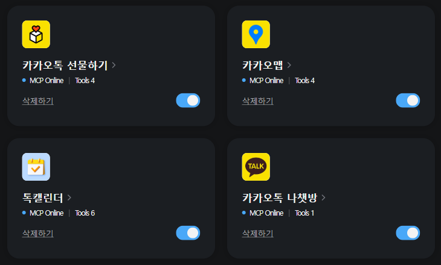
claude.ai 왼쪽 아래 이름 → 설정 → 커넥터(맞춤 설정) → [탐색]에서 'PlayMCP'를 검색해 [연결]을 누르고, 카카오 로그인·동의를 하면 끝이에요. 연결되면 '내 커넥터'의 PlayMCP 안에 담은 도구 이름이 나와요(아래 그림은 카카오맵·선물하기 부분). 도구함에 나중에 더 담았는데 안 보이면, 여기서 [연결 해제] 후 다시 [연결]하세요(저희도 이렇게 해서 카카오맵·선물하기가 보였어요).
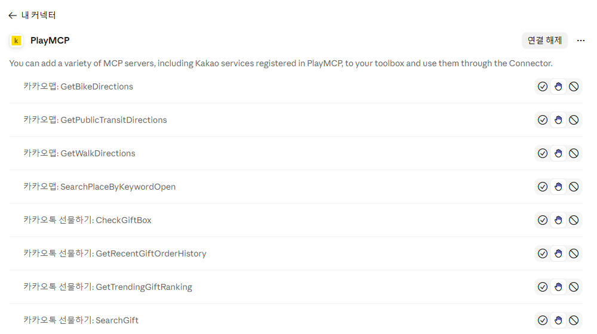
대화창에 '카카오맵으로 …', '톡캘린더에 …'처럼 서비스 이름을 넣어 말하면 클로드가 도구를 써도 되는지 물어요. [한 번만 허용]을 누르세요. [항상 허용]은 누르지 않는 게 안전해요. 서비스 이름을 빼면 클로드가 다른 검색(웹 검색 등)을 쓰기도 해요.
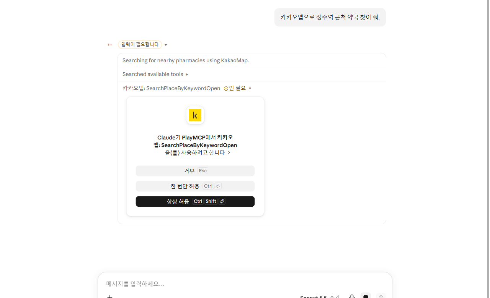
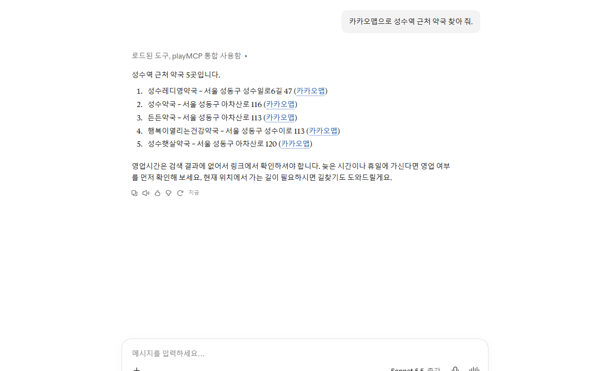
사진을 대화창에 올리고 아래 '일정 넣기' 문장을 쓰세요. 클로드가 날짜·시간·장소를 읽어 '이렇게 넣을까요?'라고 먼저 보여 줘요. 맞으면 '응, 등록해 줘'라고 답하세요. 끝나는 시간이 사진에 없으면 임의로 잡으니(저희 예시는 1시간), 그 부분을 확인하세요.
'생일' 문장으로 톡캘린더 친구 생일을 보고, '선물' 문장으로 선물하기 인기 순위에서 가격대에 맞는 상품을 받아요. 상품 링크가 같이 와요. 결제·보내기는 링크를 눌러 직접 해요.
'선물함' 문장을 쓰면 선물함을 조회해서 아직 안 쓴 선물을 알려 줘요. 언제까지 쓸 수 있는지는 카카오톡 선물함에서 직접 확인하세요.
'카카오맵으로'를 꼭 넣어 말하세요. 장소를 찾고 도보 길찾기로 역에서 몇 분인지 재 줘요. 대중교통·자전거·걷기 길찾기가 되고, 자동차 길찾기는 없어요.
문장 끝에 '카톡 나와의 채팅으로 보내 줘'를 붙이면 정리한 내용이 내 카톡으로 와요(최대 200자). 남에게 보내는 기능은 없고 나와의 채팅으로만 가요.
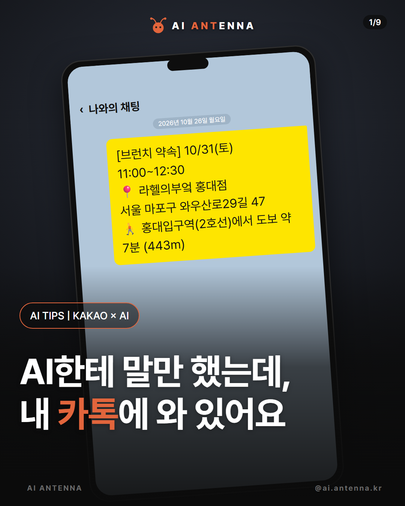
답 위에 '로드된 도구, playMCP 통합 사용함'이 보이고, 펼치면 '카카오맵: …'처럼 쓴 도구가 나와요. 이 줄이 없으면 카카오 도구가 아니라 클로드가 다른 검색을 쓴 거예요. 서비스 이름을 넣어 다시 물어보세요.
걷는 시간·거리(예: 7분, 443m)와 대중교통 시간(예: 43분)은 카카오맵 길찾기 결과예요. 출발 시각과 실제 길에 따라 조금 달라질 수 있어요.
일정·할 일은 확인 질문에 '응'이라고 답해야 들어가요. '등록했어요'라는 답이 나와야 실제로 들어간 거예요.
가게·길찾기·선물 결과에는 카카오맵·선물하기 링크가 같이 와요. 영업시간·예약·결제는 링크를 열어 직접 확인하세요.
청첩장·안내문처럼 날짜가 적힌 사진을 일정으로 옮길 때, 친구 생일이 다가올 때, 약속 장소를 역에서 가까운 순으로 고를 때, 정리한 내용을 내 카톡에 남겨 둘 때.
자동차 길찾기(지원 안 함), 친구에게 카톡 보내기(나와의 채팅으로만 감), 선물 결제·보내기(고르기까지만), 가게 영업시간·예약 확인(검색 결과에 없음).
도구함에 4개를 담고(①), 클로드 커넥터에서 PlayMCP를 연결해요(②). 도구함 화면 오른쪽 '연결하기'에 연결 주소가 있어요.
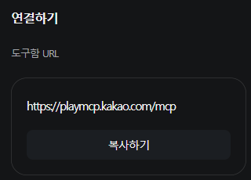
"카카오맵으로 홍대입구역 근처 브런치 카페 3곳 찾아 줘. 이번 주 토요일에 친구 넷이랑 갈 거야. 카카오맵 도보 길찾기로 홍대입구역에서 각각 몇 분 걸리는지도 알려 줘."
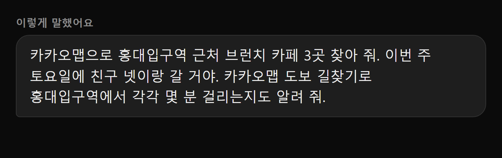
카카오맵 장소 검색과 도보 길찾기마다 허락 창이 떠요. [한 번만 허용]을 눌러요.
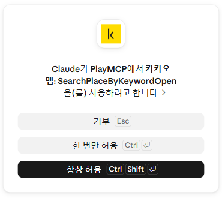
카카오맵이 찾은 3곳과 역에서 걷는 시간이 와요: 라헬의부엌 홍대점 약 7분(443m), 아날로그가든 약 10분(634m), 베어스덴브런치 약 13분(783m).
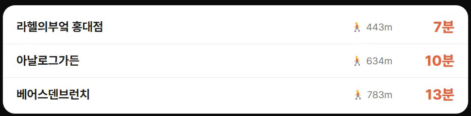
"첫 번째 카페로 이번 주 토요일 오전 11시부터 12시 30분까지 '브런치 약속' 일정 넣고, 가게 이름·주소·역에서 걷는 시간을 정리해서 카톡 나와의 채팅으로 보내 줘." 날짜·시간·제목을 다 말해서 확인 질문 없이 바로 넣었어요.
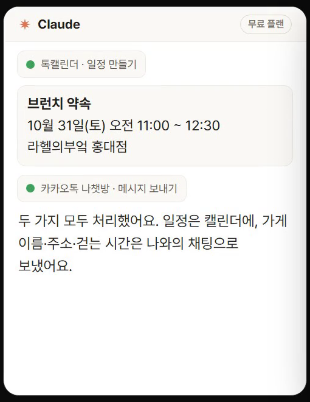
나와의 채팅에 '[브런치 약속] 10/31(토) 11:00~12:30 / 라헬의부엌 홍대점 / 서울 마포구 와우산로29길 47 / 홍대입구역(2호선)에서 도보 약 7분 (443m)'이 와요. 톡캘린더 10월 31일에도 일정이 생겨요.
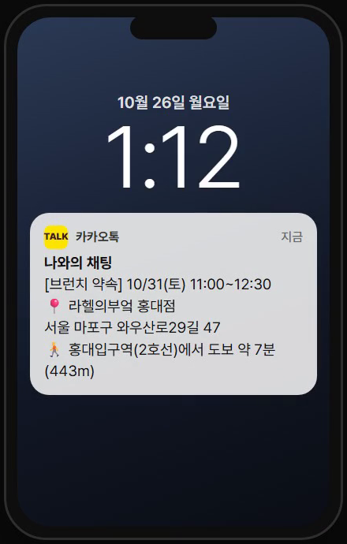
사진 올린 뒤
이 사진 보고 톡캘린더에 일정 넣어 줘. 전날 저녁 8시에 '(준비할 일)' 할 일도 같이 만들어 줘.
톡캘린더
톡캘린더로 다음 달 생일인 친구 알려 줘.
카카오톡 선물하기
카카오톡 선물하기에서 친구 생일 선물로 (3만 원대) 선물 3개 골라 줘.
카카오톡 선물하기
카카오톡 선물하기 선물함에서 내가 아직 안 쓴 선물 알려 줘.
카카오맵
카카오맵으로 (역 이름) 근처 (브런치 카페) 3곳 찾아 줘. 카카오맵 도보 길찾기로 (역 이름)에서 각각 몇 분 걸리는지도 알려 줘.
카카오맵
(출발지)에서 (도착지)까지 대중교통이랑 자전거로 가면 각각 얼마나 걸려?
카카오맵 결과 다음에
첫 번째 카페로 (이번 주 토요일) (오전 11시부터 12시 30분)까지 '(일정 이름)' 일정 넣고, 가게 이름·주소·역에서 걷는 시간을 정리해서 카톡 나와의 채팅으로 보내 줘.
도움이 되셨다면
@ai.antenna.kr
에서 바로 쓰는 AI 활용법을 계속 올립니다.